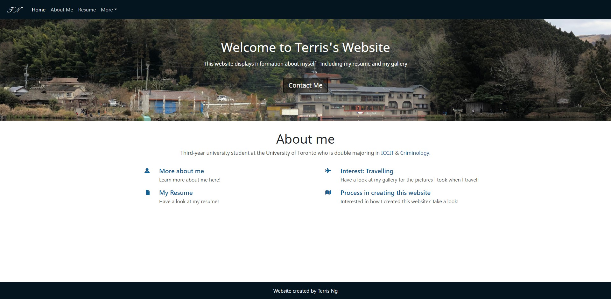
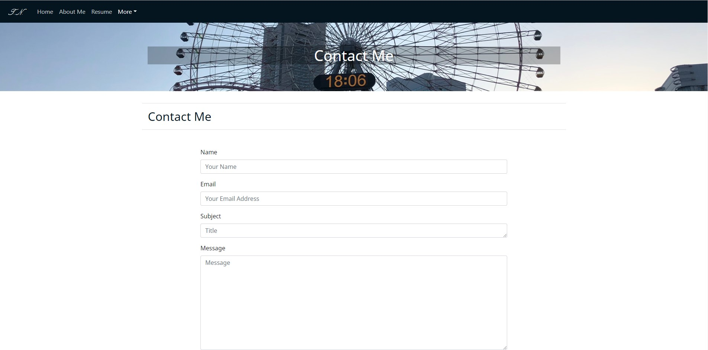
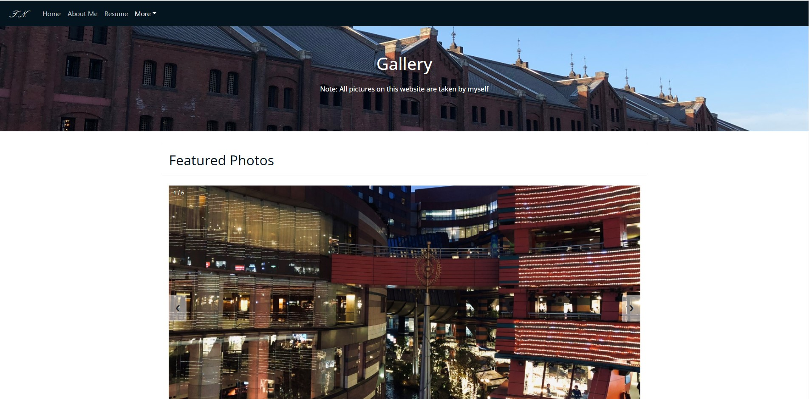

Part II: Overall design considerations
LOGO
The logo "T.N." represents Terris Ng
The background color of the logo matches the color on the navigation panel
Function: Clicking on the logo will send users to the homepage
Accessibility consideration: Confirmed that there is no contrast issue with the white color text and the background color
Homepage
Simple, straightforward structure that serve as a "portal page" to allow users to link to other pages
A short description of myself is included under "About me" header
Users can choose to use the navigation panel or the buttons below "About me" header to link to other pages
About Me page
The page starts from an overview that provides reader a brief background of myself
Following up with description of my Interests and Educations
Users can click the buttons under Interests & Educations to travel to other pages (Gallery & resume)
Resume page
A download button is present if the reader decide to view my resume in pdf format
Content below are my resume listed in web format
Two collapse button are present for the porfolio section if readers are interested to view them (otherwise save spaces)
Contact page
A form that allows users to contact me by entering their names, emails, subjects, and the messages
Users are also given the choice of uploading a file that is relevant to their message if their desire to do so
Following up with a feedback form that collects users' thoughts on this website
Gallery page
A slideshow that consists of featured photos of my choice
Below is a photo grid that consist of my other photos
Each photos can be expanded (zooomed) by clicking on them - brings up a modal